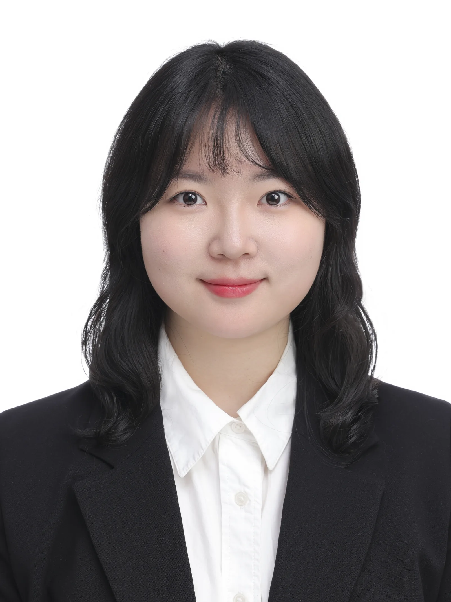
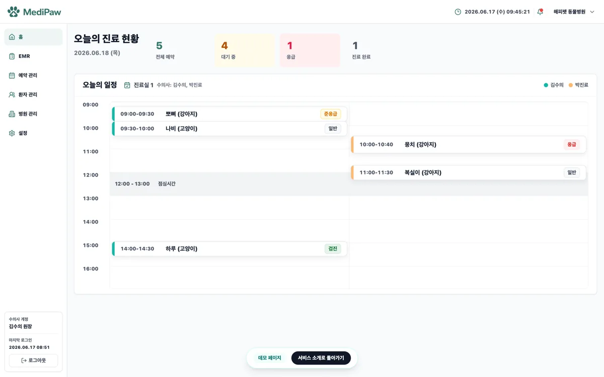
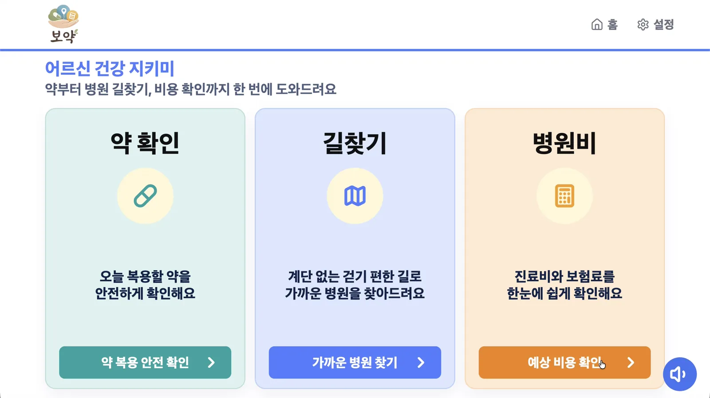

생화학 석사 및 CAR-T 연구원 출신 AI 풀스택 개발자 김찬영입니다. 실험실에서 데이터를 직접 생산하고 분석해본 경험을 바탕으로, 헬스케어 도메인의 맥락을 깊이 이해하는 AI 파이프라인과 서비스를 구축합니다.

바이오 벤치 워크부터 마케팅 데이터 분석, 그리고 AI 개발로 확장해온 커리어 여정입니다.
생물학적 데이터를 해석하고 서비스화할 수 있는 AI 엔지니어링 역량 확보 중 (PyTorch, LLM, Docker 등 실무 프로젝트 수행)
Roche사 qPCR 장비 고객 학술 문의 대응, 프로토콜 최적화 가이드 제공 및 제품별 판매 실적(YoY) 기반 시장 전략 수립
CAR-T 세포치료제 전주기 파이프라인 수행 (Cloning, Viral vector 생산, T-cell Transduction), FACS 기반 세포 품질 분석 및 동물 모델 효능 검증
비주류 모델(Xenopus laevis)에 대한 독자적 실험 프로토콜 구축 및 섬모 운동성 정량 분석 연구 (GPA 4.2 / 4.3)
SCI(E) 국제 학술지에 게재된 대표 연구 성과입니다.
Xenopus laevis 배아 모델을 활용하여 다섬모세포에서 Ruvbl1 단백질의 기능을 규명한 연구입니다. Ruvbl1 유전자 결손 시 섬모의 형태는 유지되지만 기저소체 극성(basal body polarity)이 선택적으로 교란되어 유체 흐름이 현저히 감소함을 세계 최초로 확인했습니다.
아키텍처 설계부터 배포까지 직접 주도한 핵심 프로젝트입니다.

보호자 AI 상담→문진→예약→진료(EMR/처방)→경과까지 동물병원 워크플로우 전체를 자동화한 LLM 멀티에이전트 플랫폼

독거 어르신의 약물 부작용, 병원비, 이동 장벽을 AI로 해결하는 맞춤형 시니어 헬스케어 서비스
부트캠프 초기, 데이터 수집과 분석의 기초를 다진 프로젝트들입니다.
Open University Learning Analytics Dataset을 활용해 학습자의 이탈을 예측하고 군집을 분석하는 대시보드 프로젝트입니다.
KLACI 데이터를 기반으로 지역별 특성에 따른 자동차 분포를 시각화한 기초 데이터 분석 프로젝트입니다.